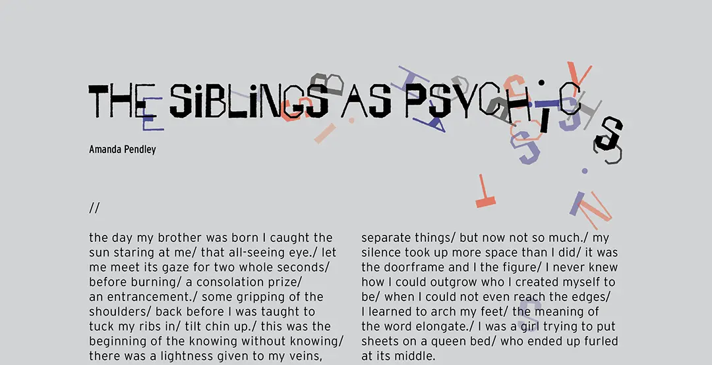
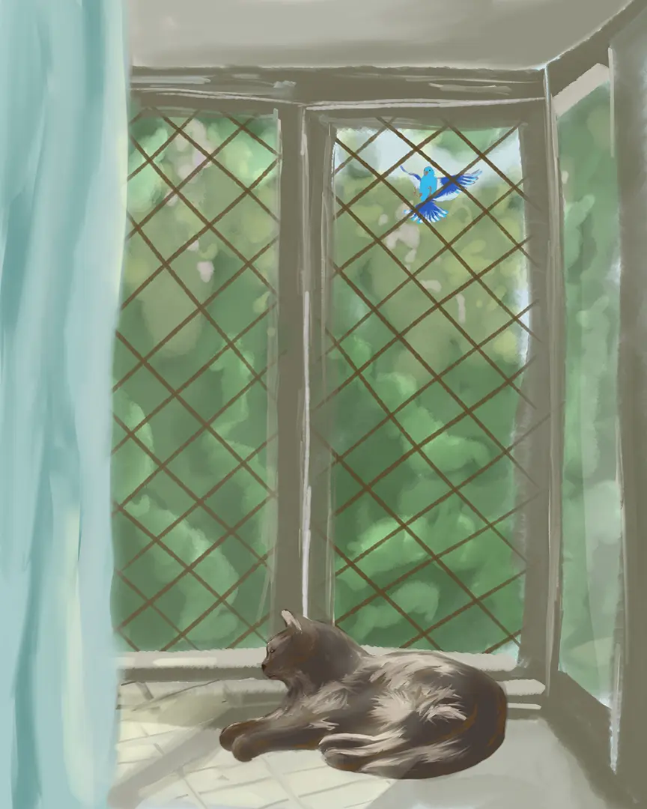
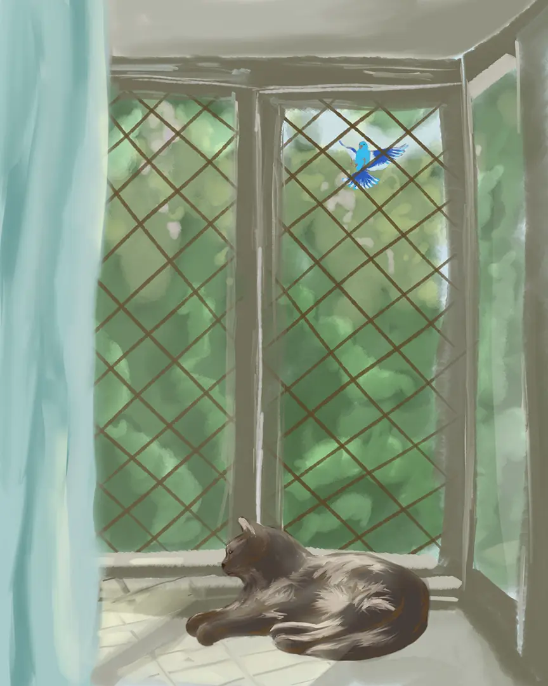
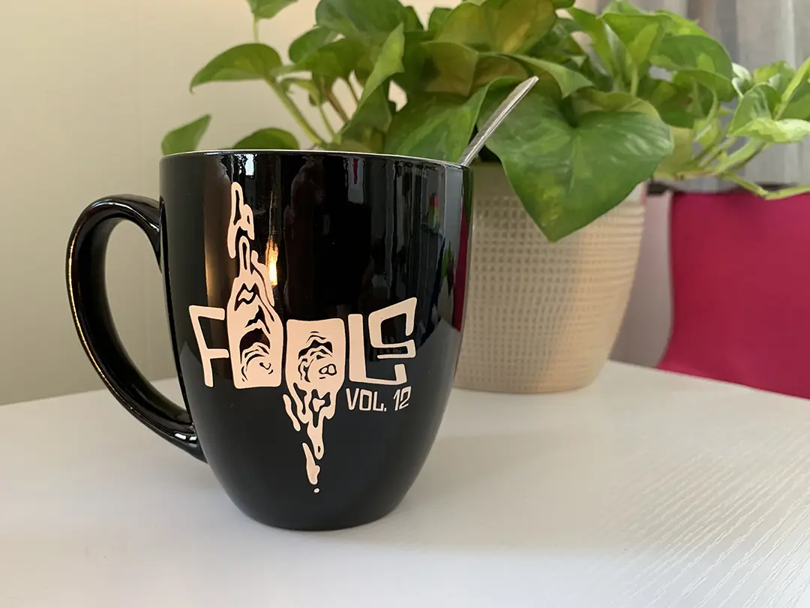
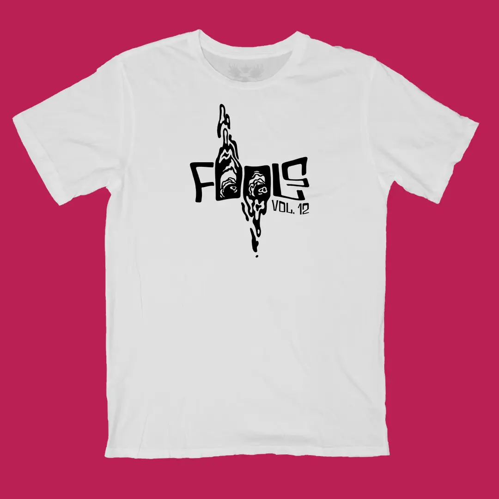
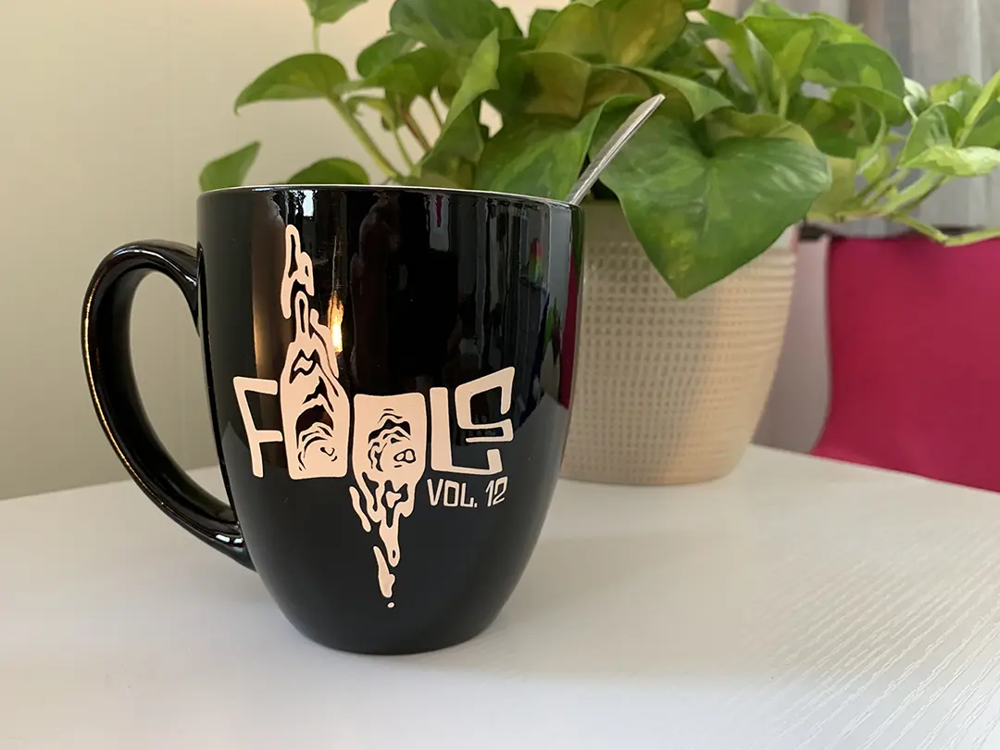
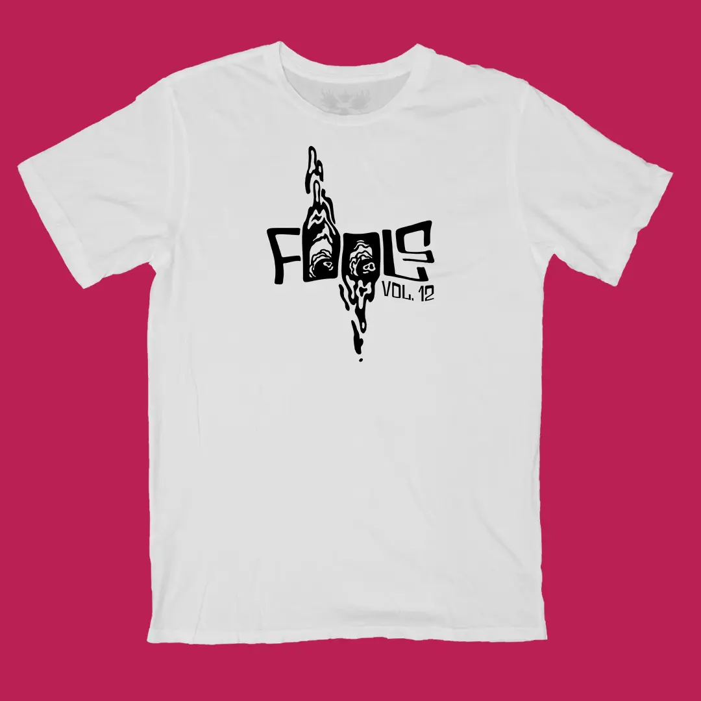
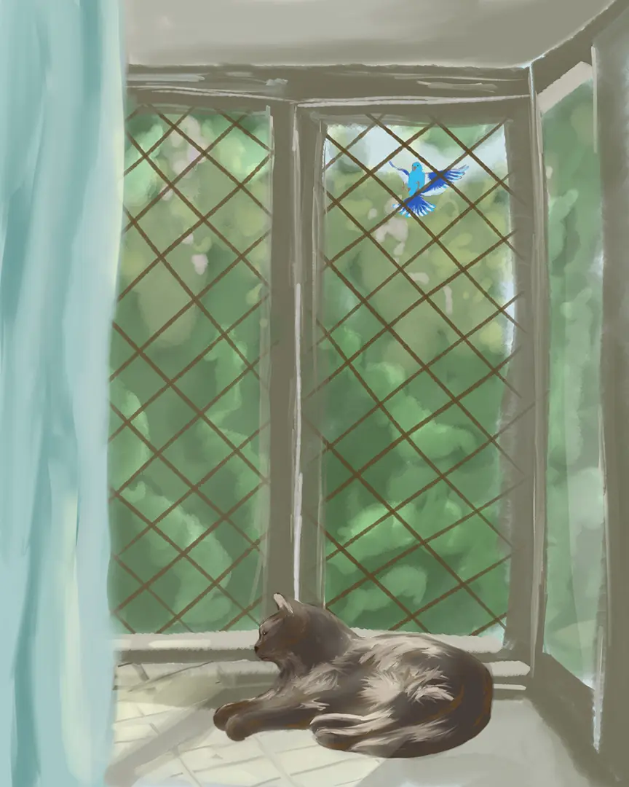
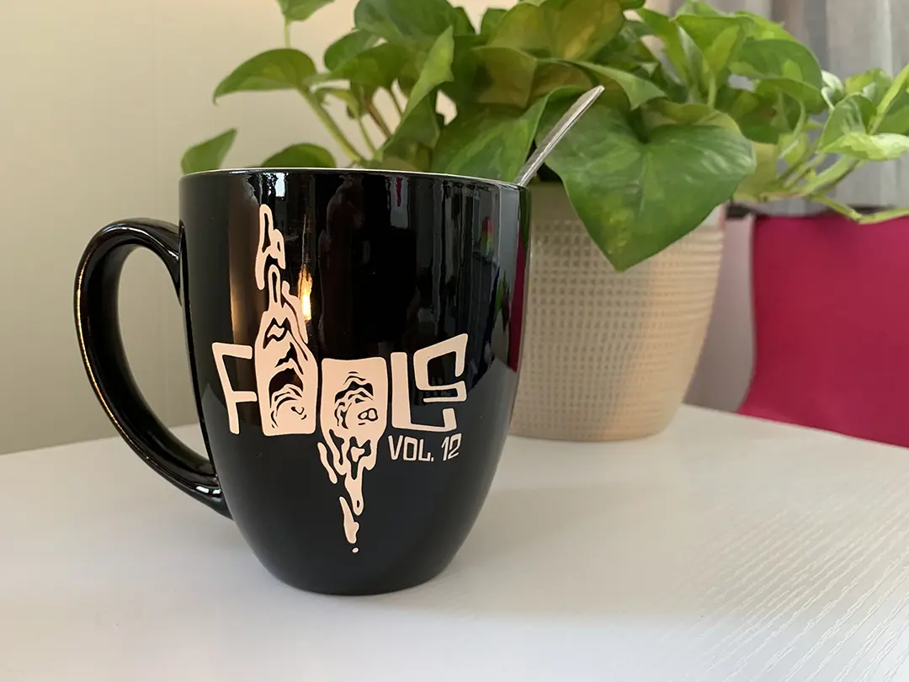
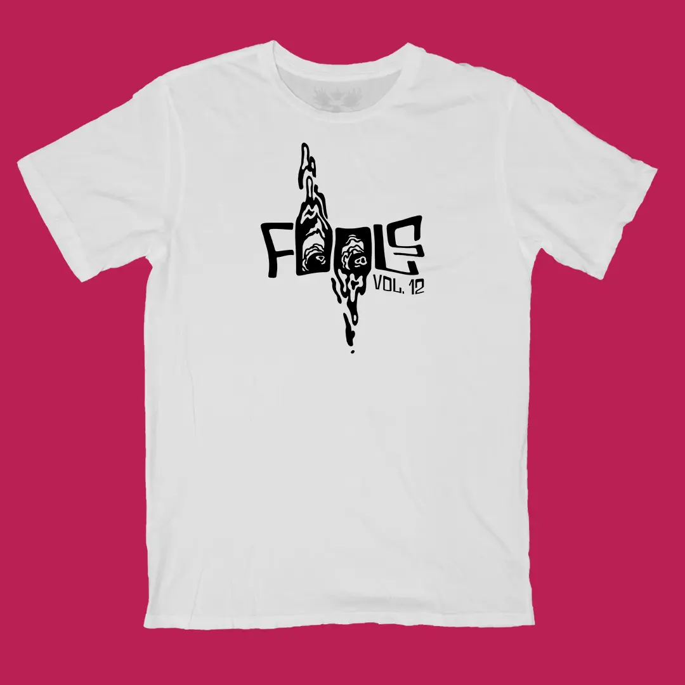

Fools Magazine

![Mockup of a three-page magazine spread called 'The Siblings as Psychics.' Pages two and three have facing
illustrations of a brother and sister. The brother, on the left, is made of black scribbles with a red core where
his heart would be. The vague form of his figure is sitting against a wall. The sister is also sitting against a wall,
but she is made of grey scribbles barely visible on the background. There are red and blue scribbles like veins throughout
her body. She's reaching out for something.](../images/gigs/fools-vol12/5.webp) 

 






Illustration, layout and merch design for volumes 11 and 12 of Fools Magazine. HOW WELL DO YOU KNOW THE CLITORIS? was published in vol. 11 and two self-portraits of mine were published in vol. 13.